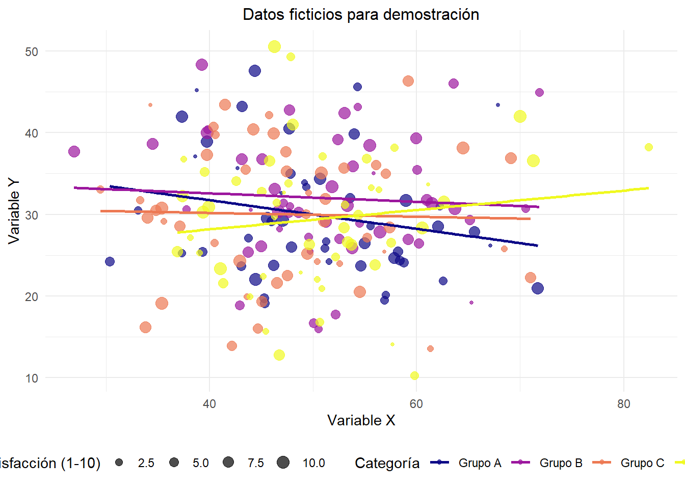

Quarto es un sistema moderno de creación de documentos dinámicos, informes, presentaciones, libros, sitios web y más, a partir de archivos de texto plano y por medio del conversor universal de documentos Pandoc.
Ventajas de usar Quarto:
Está basado en Markdown
Soporte para múltiples lenguajes (R, Python Julia, etc)
Multitud de formatos de salida (HTML, PDF, Shiny, etc)
Soporte para publicación científica
Escritura en documentos Quarto
Los documentos Quarto se distinguen por su extensión .qmd. En la siguiente tabla se muestran las reglas generales de escritura en este formato.
Código
Así se ve
Algo de texto en el párrafo.
Más texto
espacio entre lineas.
Algo de texto.
Algo de texto en el párrafo. Siempre utilizando espacios para dividir párrafos
YAML: Lenguaje de programación. Es un formato de serialización de datos que proporcionan un mecanismo de intercambio de datos legible por humanos. Dan formato a los datos de manera estandarizada para su intercambio entre aplicaciones de software. Se reconoce por el recuadro delimitado con - - -.
Abajo del YAML se encuentra el cuerpo del documento, donde se puede escribir texto y código simultáneamente. Una de las ventajas de este software es que cada sección se puede separar por títulos (#). La jerarquía de los títulos se establece según la cantidad de ‘#’.
A continuación, en esta guía combinaremos el paso-a-paso de crear un documento dinámico con quarto, a la vez que vamos viendo distintas funciones de este proceso.
Por ejemplo, como hacer una nota al pie1. Para hacerlo, solo debemos escribir [ ^2] pero sin el espacio entre los corchetes. Luego, en otra línea escribimos [^2]: Esta es la nota al pie
Documento de ejemplo
Para generar un documento Quarto, abrimos nuestro Rproject y clickeamos en: File –> New file –> Quarto document
Para poder escribir código de análisis en un documento Quarto debemos generar trozo de código llamado ‘Chunk’, que se puede crear con ctrl+alt+i o directamente en el menú de arriba en ‘Code -> Insert Chunk’.
Installing package into 'C:/Users/kevin/AppData/Local/R/win-library/4.3'
(as 'lib' is unspecified)
# Crear datos ficticiosset.seed(123) # Para reproducibilidaddatos_ejemplo <-data.frame(categoria =rep(c("Grupo A", "Grupo B", "Grupo C", "Grupo D"), each =50),valor_x =rnorm(200, mean =50, sd =10),valor_y =rnorm(200, mean =30, sd =8),satisfaccion =sample(1:10, 200, replace =TRUE))
Visualizaciones
Podemos establecer referencias cruzadas para las tablas y gráficos dentro del texto. Para poder automatizar este proceso, debemos escribir esto dentro del chunk:
#| label: tbl-sjmisc
#| tbl-cap: "Descriptivos con sjmisc"
Descriptivos
El Chunk se debería ver así:
#| label: tbl-sjmisc
#| tbl-cap: "Descriptivos con sjmisc
sjmisc::descr(data,
show = c("label","range", "mean", "sd", "NA.prc", "n"))%>% # Selecciona estadísticos
kable(.,"markdown") # Esto es para que se vea bien en quarto
sjmisc::descr(datos_ejemplo,show =c("label","range", "mean", "sd", "NA.prc", "n"))%>%# Selecciona estadísticoskable(.,"markdown") # Esto es para que se vea bien en quarto
Tabla 1: Descriptivos con sjmisc
var
label
n
NA.prc
mean
sd
range
2
valor_x
valor_x
200
0
49.91430
9.431599
55.5 (26.91-82.41)
3
valor_y
valor_y
200
0
30.33697
7.967368
40.3 (10.27-50.57)
1
satisfaccion
satisfaccion
200
0
5.68500
2.890945
9 (1-10)
Luego de establecer el link y el nombre de la tabla, podemos referenciar acá con un @, así: @tbl-sjmisc, y que se vería así Tabla 1
Gráficos
Nota
Para referenciar tablas se debe añadir el prefijo tbl en el nombre que le asignamos a #| label, mientras que para referenciar gráficos se usa el prefijo fig.
Para los gráficos se hace de la misma forma:
#| label: fig-rel
#| fig-cap: "Relación entre variables X e Y por categoría"
# Crear el gráficoggplot(datos_ejemplo, aes(x = valor_x, y = valor_y, color = categoria)) +geom_point(aes(size = satisfaccion), alpha =0.7) +geom_smooth(method ="lm", se =FALSE) +labs(subtitle ="Datos ficticios para demostración",x ="Variable X",y ="Variable Y",color ="Categoría",size ="Satisfacción (1-10)" ) +theme_minimal() +theme(plot.title =element_text(hjust =0.5, size =14, face ="bold"),plot.subtitle =element_text(hjust =0.5, size =12),legend.position ="bottom" ) +scale_color_viridis_d(option ="plasma") +scale_size_continuous(range =c(1, 4))
`geom_smooth()` using formula = 'y ~ x'

Figura 1: Relación entre variables X e Y por categoría
Podemos ver la relación entre X e Y en la Figura 1
Renderizado
Renderizar se entiende como el proceso que genera un formato de salida visual, donde se agregan distintos detalles de estilo.
Estilos
Los documentos en Quarto son ampliamente personalizables. Existen distintos temas para modificar el estilo del qmd (united, cosmo, minty, etc). Esto se hace añadiendo el argumento themes en el YAML y, al renderizar, se puede pasar del formato base de Quarto a esto:
Figura 2: Estilo base de Quarto
Figura 3: Estilo Solar de Quarto
Otros
Rutas relativas en código
forma de “señalar el camino” para abrir y guardar archivos al interior de una carpeta de proyecto autocontenido (= sin referencias locales)
este camino tiene básicamente 3 direcciones:
bajar -> hacia subcarpetas
ej: si estoy en el archivo introduccion.Qmd (directorio raíz), y quiero incluir una imagen (directorio input/images/imagen.jpg), entonces la ruta es input/images/imagen.jpg
subir -> hacia carpetas superiores
Ej: si quiero guardar una tabla en el directorio raíz generada desde un archivo de código en la subcarpeta procesamiento, entonces la ruta es ../tabla.html
subir y bajar -> hacia otras subcarpetas
Ej: para abrir la base de datos original en la subcarpeta input/data desde el código de procesamiento en la subcarpeta proc, entonces: ../input/data/original.RData
Para el trabajo final, les entregaremos una estructura anidada de documentos Quarto la cual funciona como un libro, donde cada sección es un capítulo diferente.
La plantilla se encuentra disponible en un repositorio de Github, y en el siguiente enlace podrán encontrar las instrucciones para su descarga:
 |
|